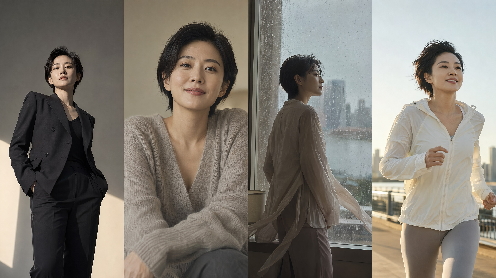
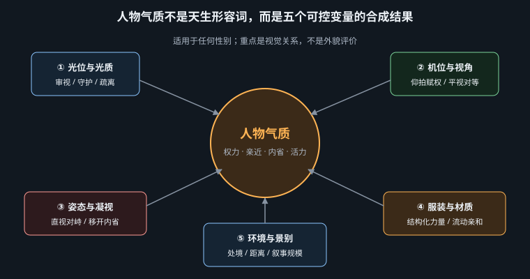

不评价人的外貌，而是用光、机位、姿态、材质与空间，构造可解释、可复现的角色关系

本章沿用旧目录“女性美”只是为了保持书稿路径兼容；方法本身是性别中立的，适用于任何性别、年龄与身体类型。人物不应被压缩成“漂亮／不漂亮”的评分对象。这里所说的气质，是画面让观众感到角色与镜头、空间、权力之间处于何种关系：被审视还是被保护，平等交谈还是居高临下，主动进入场景还是成为他人目光中的对象。
因此，“大女主”“甜美可爱”“活力四射”等都不是人的固定本质，更不是脸型或身材模板，而是五组可控变量暂时形成的阅读结果。换掉机位、光质或环境，同一个角色就会显出另一种社会姿态。先定义关系，再选择外观，能避免模型把标签翻译成训练集里最常见、也最狭窄的刻板脸谱。
把“她很强大”改写为“镜头低于眼睛 10°、肩线稳定、直视镜头、硬挺羊毛外套、空旷大厅”；把“他很亲切”改写为“视线齐平、眼平柔光、身体微向镜头开放、柔软针织、近距离生活空间”。前者在描述可观察证据，后者只是在下结论。

| 变量 | 两端变化 | 为什么有效 |
|---|---|---|
| 光位与光质 | 顶光／硬光＝被审视；眼平柔光＝被保护、可接近 | 顶光把眼窝压暗并强化垂直阴影，像制度空间的检查光；靠近视线高度的大面积柔光降低面部明暗断裂，使观众更容易读取细微表情，因而产生亲密感。 |
| 相机与视点高度 | 低机位＝赋权；眼平＝平等；高机位＝缩小 | 低机位让身体遮占更多背景并强化向上的透视，是权力的视觉语法；高机位增加头顶与地面比例，使人物像被空间包围。它表达的是镜头关系，不等同于真实人格。 |
| 姿态与凝视 | 直视＝对抗或邀请；移开视线＝内省或“正在被观看” | 直视闭合了人物—观众的视线回路，但意义取决于嘴角、距离和机位，不能机械等同于挑衅或暧昧。移开视线会打开画外空间；近距离偷拍式构图中，它也可能意味着人物未同意被看见，须谨慎处理。 |
| 服装与材质 | 结构化、硬挺＝权力；流动、柔软＝亲和 | 清晰肩线和低褶皱保持轮廓稳定，视觉上像建筑；薄纱、针织、软麻随动作变形，让身体与空气连续。材质的粗糙度、透射与垂坠机制参见第 6—9 章。 |
| 环境与取景 | 稀疏宏阔＝孤独／庄严；密集＝生活感；特写＝情绪；全身＝处境 | 空白把注意力集中到单一轮廓，也暴露人物与尺度的差距；道具密集提供生活痕迹。特写删去行动上下文，全身则让服装、地面和他者共同说明人物身处何种局面。 |
五项不是越“强”越好。低机位、直视、硬光、硬挺服装和宏大建筑若同时拉满，容易变成权力海报；保留一项反向变量——例如宏大空间中的眼平柔光——会让人物既有地位又仍可接近。
还要区分角色设计与镜头叙事：服装材质较稳定，可以跨镜头维持身份；光位、景别与凝视则随场景变化，负责说明这一刻发生了什么。建立系列图时，建议锁定角色的两项稳定变量，再让另外三项随剧情转动。例如同一位管理者在发布会上用低机位与全身景别，在倾听同事时改为眼平近景；角色没有“变弱”，只是权力关系从宣告切换成协作。这样既能保持辨识度，也不会把某种气质凝固成性别或职业的永久标签。
| 旧标签 | 光 | 机位 | 姿态／凝视 | 服装材质 | 环境／景别 | 可用片段 |
|---|---|---|---|---|---|---|
| 大女主 | 高侧硬光，轮廓清楚 | 低 10° | 重心稳定、直视 | 硬挺羊毛、清晰肩线 | 稀疏大厅、全身 | low viewpoint, steady direct gaze, structured wool tailoring |
| 自然主义 | 阴天窗光 | 眼平 | 工作中移开视线 | 旧亚麻、可见褶皱 | 密集生活场景、中景 | unposed working gesture, worn linen, lived-in room |
| “东方美” | 拒绝泛地域标签；改写为明确时代、地域、身份、妆饰与媒介，例如唐代宫廷、宋代文人语境或民国上海月份牌 | specific era + region + social role + medium | ||||
| 甜美可爱 | 眼平大柔光 | 眼平近距 | 开放姿态、轻微侧视 | 柔软针织、圆形细节 | 明亮日常空间、半身 | soft knit, rounded details, open relaxed posture |
| 活力四射 | 侧逆日光 | 略低广角 | 跨步、视线朝行动方向 | 拉伸技术织物 | 城市跑道、全身 | mid-stride, 28mm, full-body environmental portrait |
| 元宇宙 | 冷暖交叉光 | 眼平略低 | 直视、手势交互 | 虹彩膜、半透明层 | 界面化空间、中全景 | iridescent membrane, translucent layers, spatial interface |
an adult woman standing alone at the center of a restrained civic hall, feet firmly planted, sparse stone walls and a high ceiling, full-body environmental portrait, a controlled hard key from high camera-left at 5000K, faint neutral fill, structured charcoal wool coat with a precise shoulder line and low surface sheen, contemporary editorial portrait photography, 50mm lens, f/4, camera 10 degrees below eye level, steady direct gaze, clear silhouette, negative space above for a campaign headline
模型：MJ v8.1 · 参数：--ar 2:3 --stylize 100 --chaos 4。低视点、稳定重心与硬挺肩线共同赋权；高侧光带来“承担审视”的压力，而不是无理由的英雄光。稀疏大厅既放大尺度，也保留孤独感。
an adult person repairing a canvas bag at a wooden kitchen table, looking down at the stitch, a compact lived-in apartment with books, cups and daylight-worn walls, large overcast window light at eye level, 6200K, soft shadow transitions, worn undyed linen shirt, visible creases, matte ceramic and unfinished wood, observational documentary portrait photography, 50mm lens, f/3.2, eye-level camera, medium shot, no beauty retouching, retain ordinary skin texture and signs of use
模型：FLUX.2 · 参数：1536×1024，steps 32，guidance 3.5，seed 2107。移开的视线由具体劳动解释，不是故作忧郁；密集道具提供生活证据，柔光只负责可读性。自然主义不是“素颜美女”，而是减少摆拍控制与商业修饰。
an adult person offering a hand-folded paper bird toward a friend just outside the frame, a sunlit neighborhood studio with pale wood shelves, large eye-level softbox feel, 5600K, low contrast, soft coral knit cardigan with rounded buttons and a fluid cotton shirt, warm contemporary lifestyle portrait photography, 65mm lens, f/2.8, eye level, relaxed open shoulders, half-length framing, room for a short social campaign caption
甜美可爱｜模型：Nano Banana Pro · 参数：4K，画幅 4:5，temperature 0.7，单张。可爱来自圆形细节、柔软触感和分享动作，不来自幼态化身体；画外朋友让侧视成为社交关系，而非供观看的姿势。
an adult urban runner crossing a painted pedestrian bridge at the peak of a stride, layered city blocks and morning commuters behind them, crisp side-back sunlight at 5400K with soft sky fill, short readable motion blur, stretch technical jersey, breathable mesh panels and scuffed running shoes, dynamic sports editorial photography, 28mm lens, f/5.6, camera slightly below waist height, full-body wide framing, keep both feet and the route visible, horizontal campaign layout
活力四射｜模型：Seedream 5 · 参数：2048×1365，guidance 4.0，seed 4219。能量由跨步相位、广角空间推进和侧逆光边缘产生；全身与路线交代“去哪里”，避免只靠夸张笑容表达活力。
an androgynous adult avatar calibrating a floating public transit map with one raised hand, a navigable virtual concourse with clear entrances, benches and human scale, cross-lighting: cyan area light at 7000K and warm amber key at 3200K, iridescent membrane jacket over translucent woven layers, physically plausible folds, speculative interface design rendered as a photographic character key visual, 35mm lens equivalent, f/4, camera 5 degrees low, direct attentive gaze, three-quarter body, legible spatial hierarchy, empty right third reserved for interface copy
元宇宙｜模型：FLUX.2 · 参数：1344×1792，steps 36，guidance 4.0，seed 8821。重点是可导航公共空间、交互动作与材料逻辑，而非无目的霓虹。冷暖交叉光区分现实身体与数据界面，透明层仍保留可信褶皱，避免“塑料盔甲”默认值。
oriental beauty 在英语里用来指人已经过时，并常被视为冒犯性、贬抑性的表达，应避免使用。中文里的“东方美”也把跨度巨大的地区与时代压成神秘、细眼、红金服饰的刻板拼贴。模型不是在还原某个传统，而是在混合训练集中最醒目的符号。修复方法是指定时代、地域、社会身份、妆饰、媒介与用途，并承认下面三种视觉系统彼此不能互换。
a Tang-dynasty court lady with a fuller figure standing beside a painted wooden screen, Chang'an court setting, restrained interior props, full-body portrait, soft high window light at 5200K with gentle frontal fill, high-waisted layered ruqun, silk with measured drape, sanbai makeup clearly described, historically informed Chinese court portrait illustration, mineral-pigment color logic, 70mm portrait perspective, eye level, composed three-quarter gaze, costume research plate with an uncluttered background
唐代宫廷语境｜模型：Seedream 5 · 参数：1536×2048，guidance 3.8，seed 7031。较丰润体态、三白妆与高腰层叠服装共同建立时代线索；矿物颜料式配色约束媒介，避免自动滑向近代旗袍或泛武侠。
a slender adult figure in a restrained Song-dynasty scholarly household, holding a folded letter, a quiet Jiangnan interior with one low table and a distant garden opening, soft eye-level daylight at 6000K, low contrast and broad shadow transitions, muted layered robe with a narrow vertical silhouette, matte silk and fine ramie texture, Song-inspired figure painting with controlled ink line and limited mineral color, 85mm equivalent, f/4, eye level, three-quarter body, gaze lowered toward the letter, quiet museum-education illustration, no later-dynasty accessories
宋代克制语境｜模型：MJ v8.1 · 参数：--ar 3:4 --stylize 75 --chaos 2。修长垂直轮廓、有限设色与含蓄动作构成“克制、纤秀、雅致”，而不是用单一族群脸型代替历史。信件给低垂视线一个叙事原因。
an adult Shanghai department-store customer pausing beside a radio cabinet, a 1930s Republican-era apartment with patterned curtains and product packages, warm frontal studio light at 4200K, gentle painted shadow and a cool window accent, period qipao in printed rayon, lacquered wood and satin highlights, Shanghai yuefenpai calendar-poster illustration, chromolithographic print texture, 50mm portrait perspective, eye level, full figure with a graceful but grounded stance, vertical advertising composition, blank calendar panel at the bottom
民国上海月份牌｜模型：Nano Banana Pro · 参数：4K，画幅 2:3，temperature 0.6，单张。月份牌的商业构图、印刷质感与现代家居消费场景是关键；旗袍只是其中一项。底部日历留位把它落实为广告媒介，而不是“复古东方女子”写真。
| 症状 | 失败机制 | 修正顺序 |
|---|---|---|
| 所有类别都是同一张精修脸 | 标签只激活训练集审美平均值，五个变量没有提供替代证据 | 先删“美丽、完美”等评价词，再固定机位、动作和生活场景，最后补材质。 |
| 人物看似强大却像反派海报 | 低机位、顶硬光、直视、黑色硬装与宏大空间全部同向叠加 | 保留两项权力信号，把光改为眼平柔光，或将场景换成有人的工作空间。 |
| 直视变成挑逗，侧视变成偷拍 | 凝视脱离动作、距离与观看者身份；模型用商业人像惯例补空白 | 写明视线对象与动机；涉及私人空间时改为知情的合作式机位，避免窥视构图。 |
| “东方”人物时代混搭 | 泛标签同时召回多个地域与朝代的高频符号 | 锁定年代、城市／地区、身份、衣着、媒介；添加“no later-dynasty accessories”一类边界约束。 |
| 元宇宙只剩霓虹塑料 | 抽象科技词没有功能和材料物理，模型回落到赛博朋克默认簇 | 先写空间用途和交互任务，再写膜材、织物、反射与透射，最后才加色光。 |
调试时一次只改一个变量，并保留 seed 或参考构图：先判断权力关系是否正确，再看动作与凝视，之后处理材质，最后才微调色温与风格强度。气质定义的目标不是找到一个“最美的人”，而是让角色在特定叙事中以清楚、尊重且可控的方式被看见。